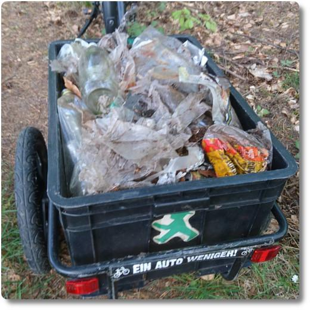

Sauber Machen im Wald
Am Tag der Arbeit kann ich nicht einfach nur rumsitzen und nichts tun... 😸 Diesmal bin ich mit Rad und Anhänger zum Langener Waldsee gefahren. Es ist unglaublich, wie viel Plastikmüll und alte Glasflaschen dort herum liegen!
Meinen Fahrradanhänger habe ich in nicht einmal 20 Minuten randvoll bekommen. Leute, werft euren Müll bitte nicht achtlos in der Gegend rum. 😠 Die Scherben können furchtbare Verletzungen hervorrufen, wenn man reintritt. Und das Plastik verrottet in 100 Jahren nicht. Das sieht echt 💩 aus...!
